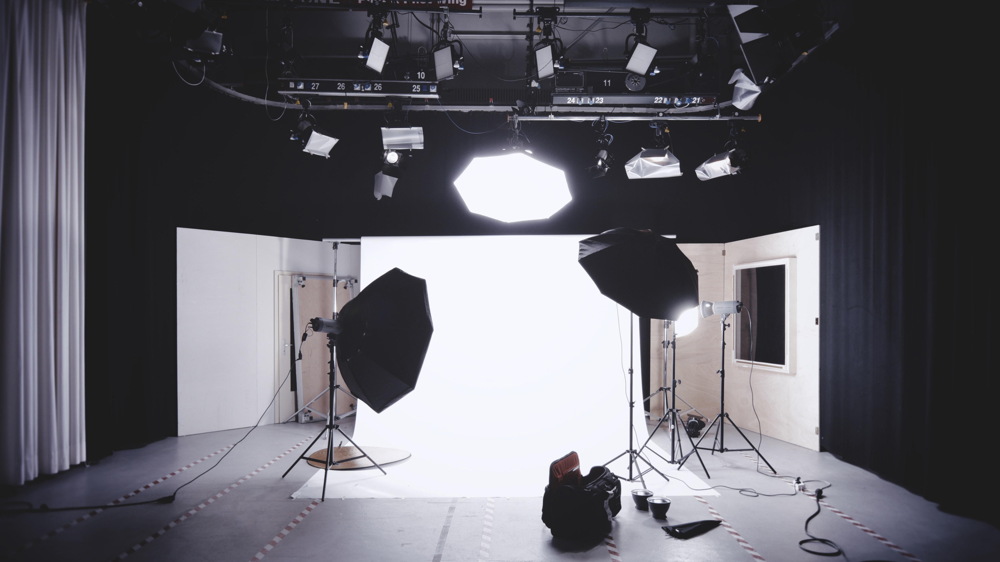
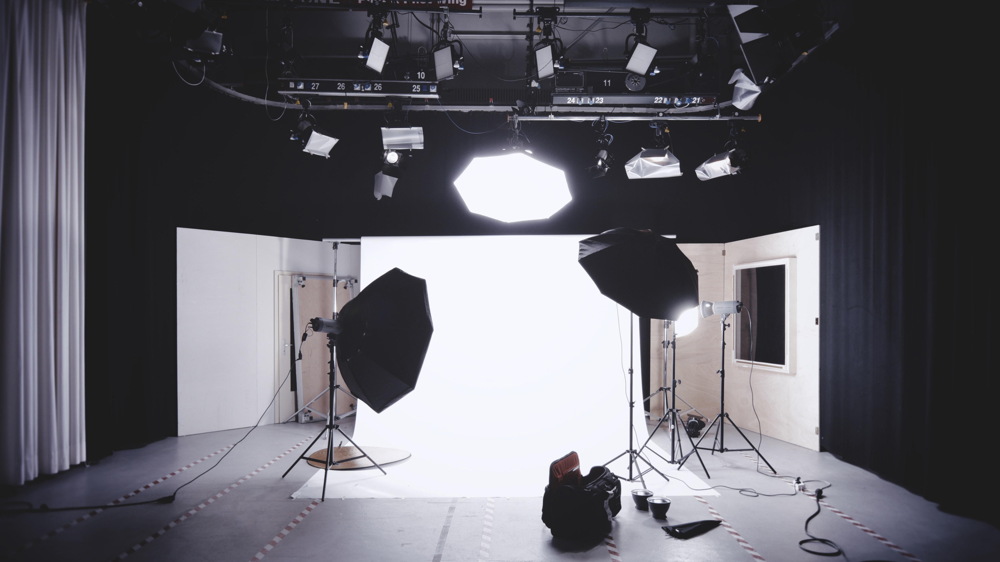
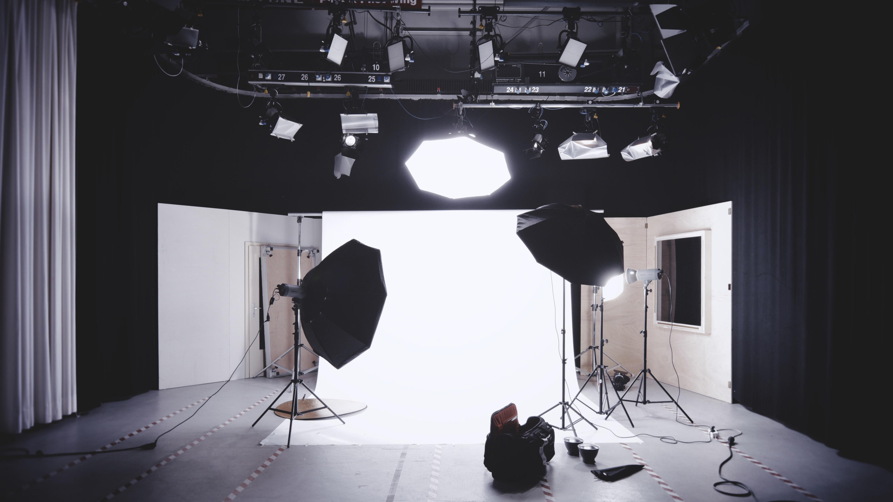
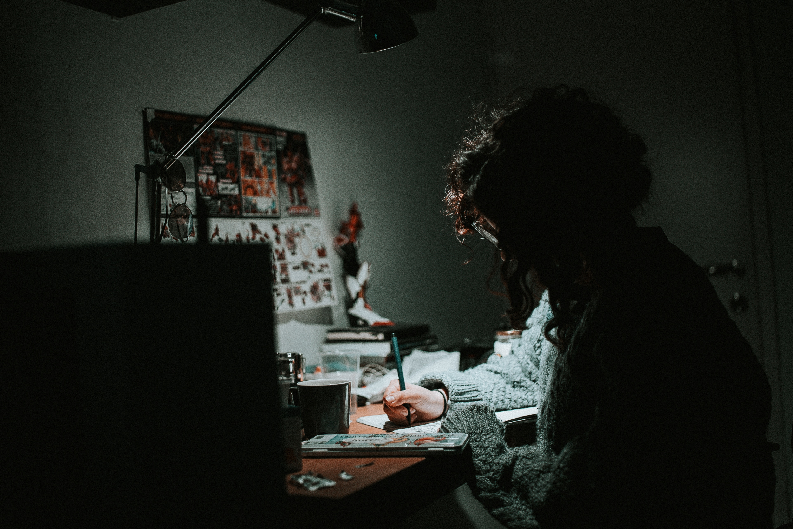
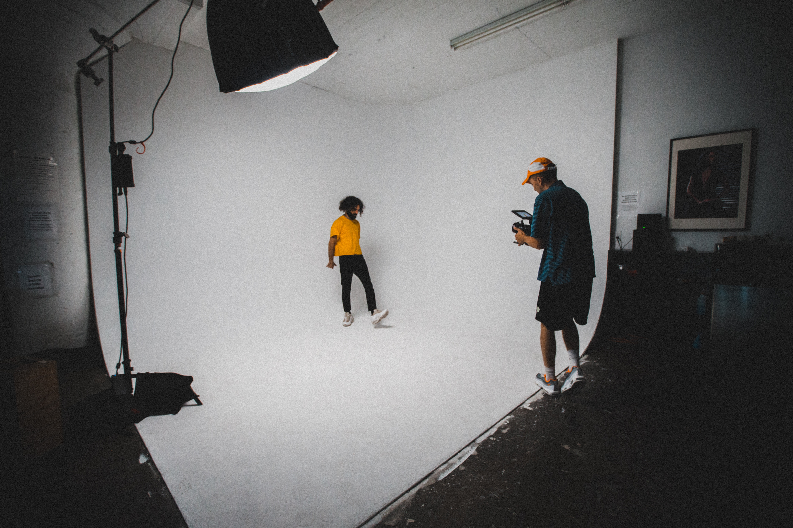
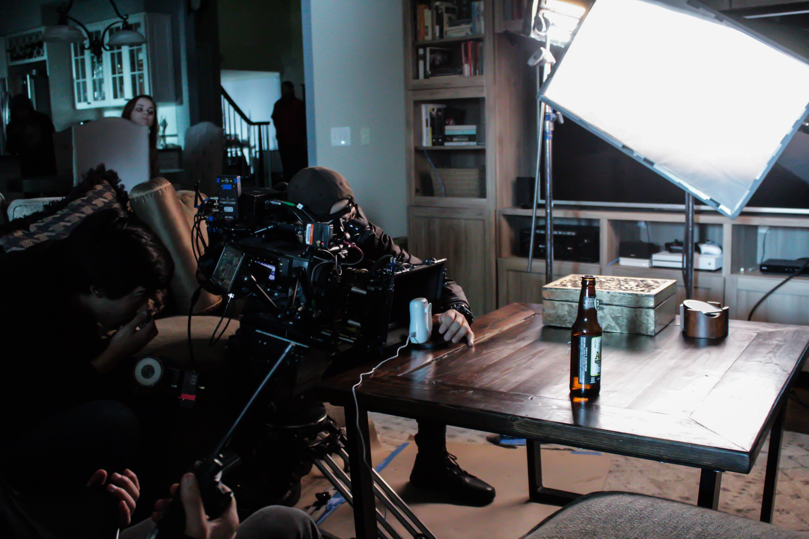
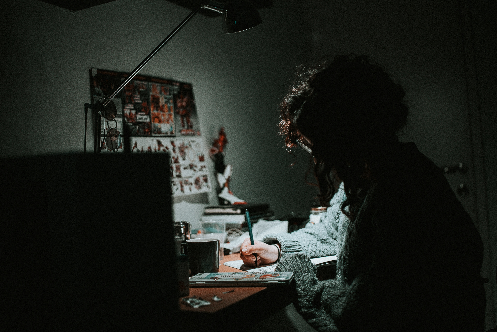
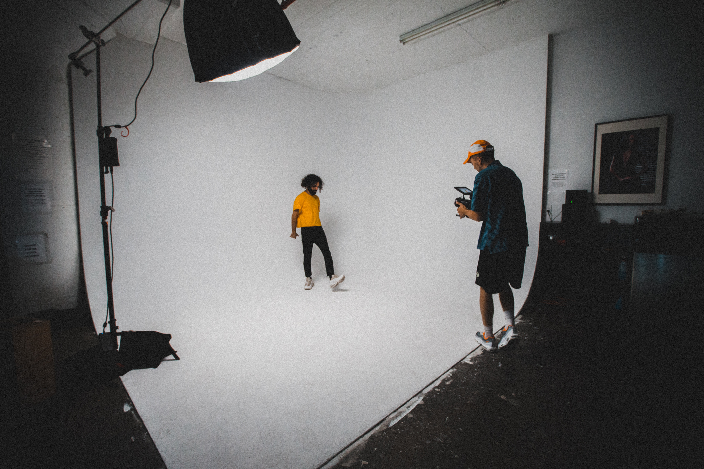
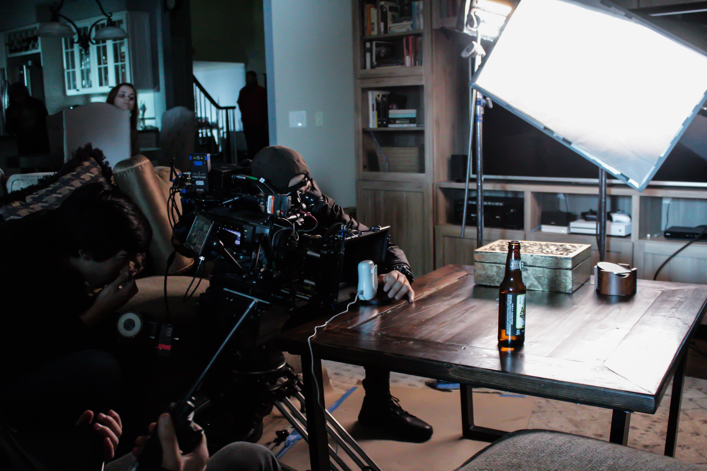

Creative Loop behöver bygga upp en bilddatabas av stillbilder och video som ska användas (och återanvändas) i våra sociala medier (Instagram och Facebook).
Materialet ska vara en blandning av varumärkesbyggande, ren försäljning och kunna användas i olika former av poster med call to actions. Viktigt är också att en specifik stil sätts (ej svartvitt) som kan följas så att allt material framöver har en röd tråd.
Det långsiktiga målet med materialet är att det ska leda till försäljning av platser genom att fler blir intresserade av att klicka sig in till vår hemsida och/eller kontakta oss direkt efter att ha sett en eller flera poster.
Olika kategorier av material som man kan tänka sig. Stilen i materialet i exemplen varierar, som nämnt under mål ovan ska allt material över alla kategorier följa samma röda tråd i redigering/känsla.
Viktigt att tänka på att det behövs viss typ av staging så inte kontoret bara fotas rakt av utan tanke på vad som kommer med i bild.
Hitta snygga sätt att visa upp alla olika delar av kontoret, dvs alla gemensamma ytor samt skrivbord.
Vi vill gärna få med känslan av gemenskap och ta bilder på våra medlemmar som vi kan presentera. Vi måste givetvis be om lov först.
Något mer anonyma bilder men som ändå (i alla fall för det mesta) har med människor i bild.


 
Viktigt att detta inte blir för klyschigt som det lätt blir. En blandning av bilder på våra konferensrum (med och utan människor).


Vi behöver någon typ av skön gruppbild på oss 3 som vi kan ha under en About-sektion på hemsidan.
Vi kommer inte producera några långa filmer med voice-over eller dylikt men man kan t.ex. köra åkningar genom kontoret (med och utan människor i rörelse), någon går in och ut ur entrén, någon kommer in och parkerar sin cykel, någon brygger kaffe osv.
Gillar formatet som Oscar Properties kör med. Väldigt korta sekvenser, bara en åkning per post. 5-10 sekunder. Innehållsmässigt får vi göra lite annorlunda såklart eftersom vi inte säljer asfina nyproduktionsbostäder :)
https://www.instagram.com/p/Bhdo2w5BLXC/
https://www.instagram.com/p/BhOUcQmhoGQ/
Bilder från större happenings när vi har dom. Det kan vara after works, hackats, meetups osv.
Initialt 3 000-5 000 kr. Projektet får delas in i delar eftersom allt detta inte går att utföra för den summan. Känns logiskt att börja med Space och Work som är lite mer generella kategorier.